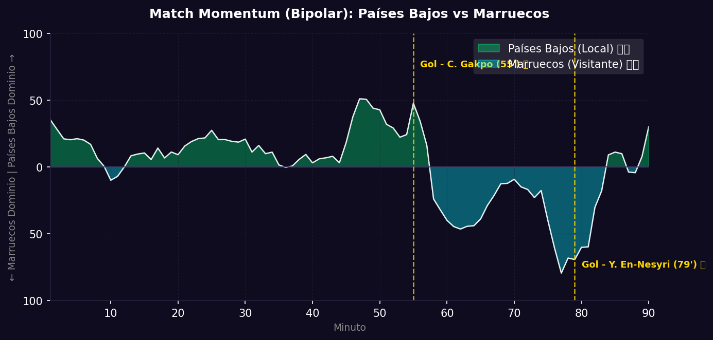

📝 Crónica y Análisis Posterior (Post-Partido)
❌ PREDICCIÓN FALLIDA
⚽ Resumen del Partido (Resultado Real: Países Bajos 1 (2) - 1 (3) Marruecos)
Marruecos volvió a vestirse de matagigantes en la copa del mundo al apear a la selección de Países Bajos en una dramática tanda de penales tras finalizar 1-1 los 120 minutos reglamentarios. En un partido de alta tensión táctica, la Naranja Mecánica rompió el cero en el minuto 55' por medio de Cody Gakpo, quien definió con maestría tras un pase entrelíneas de Xavi Simons.
Sin embargo, Marruecos reaccionó con orgullo e intensidad. A base de desbordes constantes de Achraf Hakimi, los Leones del Atlas encontraron el premio en el minuto 79': un centro espectacular del lateral derecho del PSG fue cabeceado al fondo de la red por Youssef En-Nesyri para desatar la locura de los hinchas marroquíes y decretar el 1-1 que se mantendría hasta la prórroga. En el drama de los penales, el portero marroquí Yassine Bounou (Bono) se erigió como la figura absoluta al detener los lanzamientos de Memphis Depay y Xavi Simons, guiando a Marruecos a un histórico triunfo 3-2 en la tanda de penales.
🔮 Impacto en la Fase Final (Dieciseisavos) y Proyecciones
- Ajuste del Algoritmo: La clasificación de Marruecos representa un nuevo golpe a los pronósticos matemáticos que favorecían a Países Bajos (50% vs 28%). La disciplina defensiva extrema en eliminación directa y la pericia en penaltis confirman el tremendo espíritu de copa de los africanos.
- Proyección de la Siguiente Fase (Octavos de Final): Marruecos avanza a los Octavos de Final, donde se enfrentará a la sorpresiva selección de Canadá en un duelo de pronóstico reservado.
📈 Análisis del Match Momentum y Match Point (Punto Crítico)
El Match Momentum describe un partido muy disputado con alternancias de dominio. Países Bajos manejó el ritmo del partido con un 54% de posesión e intensidad durante los primeros 60 minutos, pero a partir del gol, cedió terreno. Marruecos se apoderó de las acciones en el último cuarto de hora (minutos 75' a 90'), alcanzando su máxima agresividad ofensiva que culminó con el gol del empate por medio de En-Nesyri.
El Match Point (Punto Crítico) se situó indudablemente en la tanda de penales, específicamente en la primera atajada de Bono. Detener el cobro inicial de Memphis Depay inyectó de calma a los ejecutores marroquíes y trasladó toda la presión psicológica al combinado neerlandés, que terminó errando tres cobros en total.
Gráfico: Match Momentum (Intensidad de Ataque)

🇿🇦 Países Bajos: Análisis Táctico
Ventajas
- Ataque fluido y dinámico: Simons y Gakpo se entienden a la perfección, rotando posiciones para desajustar marcas defensivas.
- Gran pegada ofensiva: Anotar 10 goles en fase de grupos demuestra una efectividad excelsa de cara al arco.
- Seguridad en defensa aérea: Virgil van Dijk comanda el área en balones parados y centros frontales.
Desventajas
- Espacios en transición defensiva: Tienden a quedar expuestos si pierden el balón con sus laterales avanzados, lo cual Hakimi puede castigar.
- Dificultades ante marcas individuales: Pueden perder fluidez si el rival ejerce una presión personal intensa sobre De Ligt y sus pivotes.
🇨🇦 Marruecos: Análisis Táctico
Ventajas
- Bloque defensivo muy coordinado: La defensa es un cerrojo cuando logran replegarse y achicar espacios entre líneas.
- Salida de balón de alta calidad: Achraf Hakimi y Brahim Díaz aseguran una transición limpia y peligrosa al ataque.
- Gran efectividad en contragolpe: Son especialistas en castigar los descuidos defensivos de rivales volcados en ataque.
Desventajas
- Inconsistencia en el área propia: Concedieron 2 goles ante Haití, mostrando momentos de descoordinación defensiva bajo presión alta.
- Menor rotación de plantilla: Su once titular realiza un enorme despliegue físico y las alternativas en el banco son más limitadas.
📊 Pizarras y Gráficos Tácticos
Perfil Táctico (Países Bajos)

Perfil Táctico (Marruecos)

 Marruecos
Marruecos